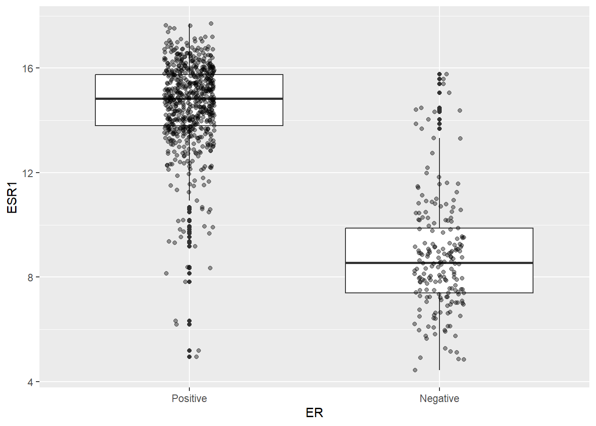
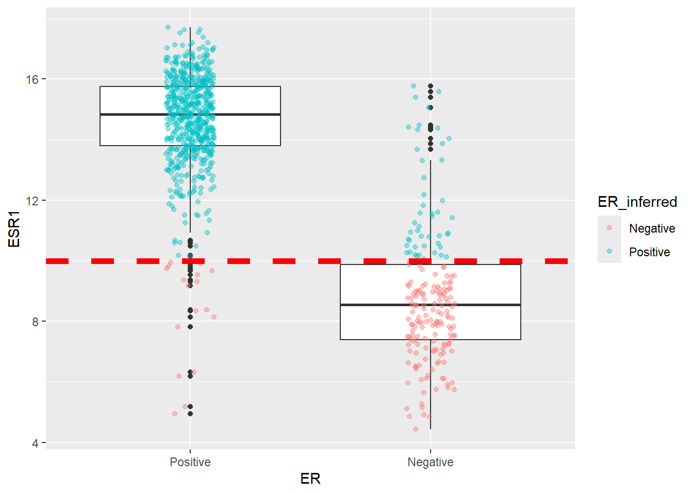
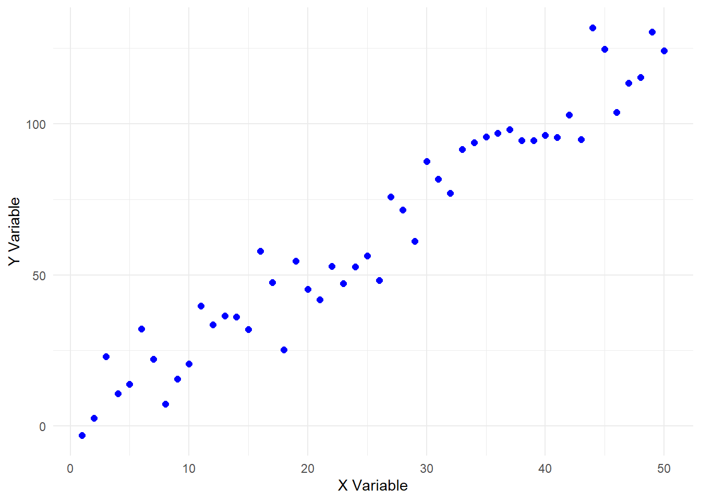
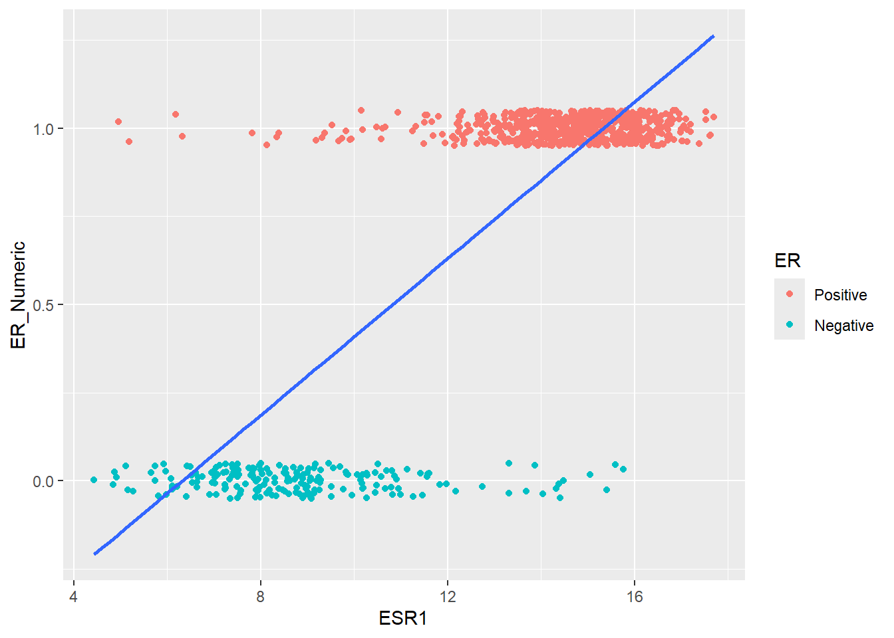
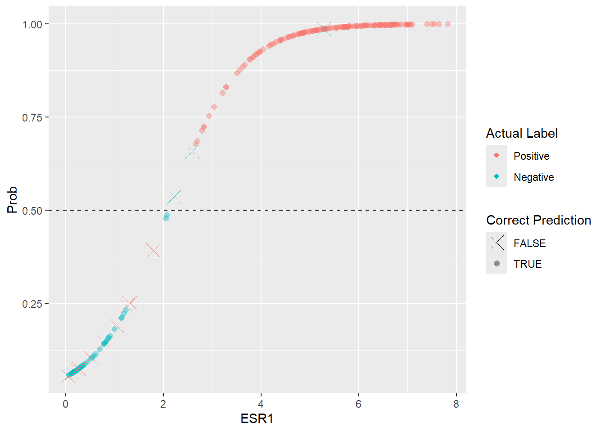
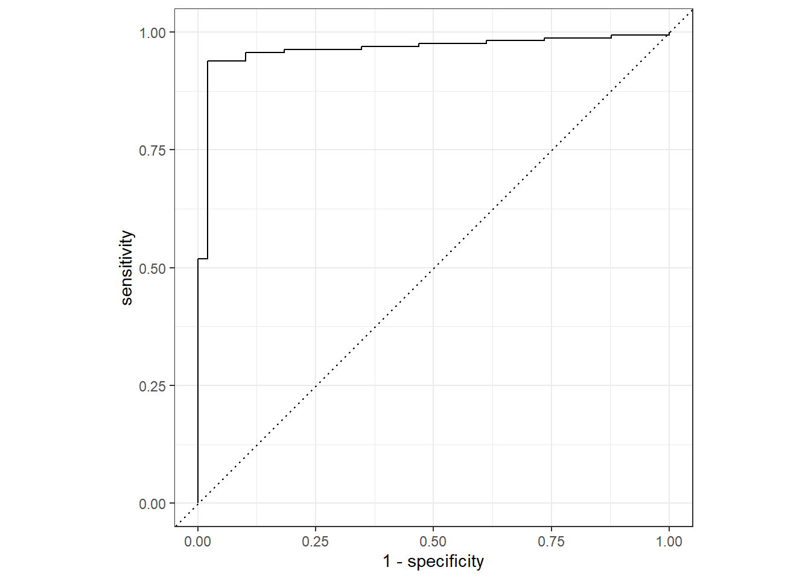

if(!require(tidymodels)) install.packages("tidymodels")
## install BiocManager to install Bioconductor packages
if(!require(BiocManager)) install.packages("BiocManager")
if(!require(tidybulk)) BiocManager::install("tidybulk")
if(!require(SummarizedExperiment)) BiocManager::install("SummarizedExperiment")
if(!require(dplyr)) install.packages("dplyr")
if(!require(ggplot2)) install.packages("ggplot2")
if(!require(forcats)) install.packages("forcats")Tidymodels for omics data: Part 2
A proof of concept machine learning tasks to classify Estrogen Receptor status of TCGA breast cancers using logistic regression and decision trees
Pre-amble
In the previous section we described how to download TCGA data for breast cancers and manipulated them using a combination of tidybulk and dplyr to retain a set of expressed, variable genes plus a set of known cancer genes.
There is a very extensive set of clinical information recorded for each sample / patient, but to keep things simple we will start with a task for being able to predict Estrogen Receptor status from the expression data, which can be used as an indicator of whether a patient will respond to certain treatments. This is clearly not going to get us a Nature paper or a Nobel prize, but it should work well and introduce some of the key concepts of machine learning. There are a set of packages that we will need:-
You also need the processed data from the previous section and the code to download this is:-
### get the saved RDS
dir.create("raw_data", showWarnings = FALSE)
if(!file.exists("raw_data/brca_gene_filtered_SE.rds")) download.file("https://github.com/markdunning/markdunning.github.com/raw/refs/heads/master/posts/2025_11_06_tidymodels_TCGA_part1/brca_gene_filtered_SE.rds", destfile = "raw_data/brca_gene_filtered_SE.rds")Pre-processing
The object brca_gene_filtered_SE.rds is a SummarizedExperiment, which is a specialised object type used for RNA-seq and other omics type data. The tidybulk package can be used to convert this into a “tidy” format for easy manipulation with the tidyverse set of package. A tidy format is also ameanable to fitting models in R, as the general format of a model is in the form y ~ x with y and x being columns some data frame. y is often referred to as the response variable and x as the predictor variable.
In reality we will often have more than one predictor and our analysis will try and work out the best combination of variables to predict the outcome. However, in this example we will just use the expression of the ESR1 gene to predict the response of ER status (er_status_by_ihc). Hence we create a data frame with ESR1 expression and ER status as columns. For this reasons that will become apparent shortly we also create a binary (0 or 1) representation of ER status with 1 being equivalent to Positive. We’ll also change the order of the ER factor so that Positive is before Negative.
Note
Since we are only using one gene this is simplified as filtering by ESR1 means the values in fpkm_uq (our normalised counts) are already the expression of ESR1. If we wanted to include multiple genes we would need a column for each gene.
library(tidybulk)
library(SummarizedExperiment)
brca_gene_filtered <- readRDS("raw_data/brca_gene_filtered_SE.rds")
er_data <- brca_gene_filtered[rowData(brca_gene_filtered)$gene_name == "ESR1"] |>
tidybulk() |>
dplyr::select(ER=er_status_by_ihc, ESR1 = fpkm_uq) |>
dplyr::filter(ER %in% c("Positive","Negative")) |>
dplyr::mutate(ER_Numeric = ifelse(ER== "Positive", 1,0)) |>
dplyr::mutate(ESR1 = log2(ESR1 + 1)) |>
dplyr::mutate(ER = forcats::fct_rev(ER))We have already seen the relationship between the ER status and the expression level of ESR1 in the form of a boxplot. The relationship is striking, but doesn’t always hold true that higher ESR1 means Positive. There are clearly some Negative samples with ESR1 expression over 6, and some Positive samples with ESR1 around 0.
library(ggplot2)
ggplot(er_data, aes(x = ER, y = ESR1)) + geom_boxplot() + geom_jitter(width = 0.1, alpha= 0.4) 
We can attempt to draw a horizontal line on the boxplot at sensible point and use this to infer the ER status and add this information to the data. Congratulations! We have just done our first classification 🎉
er_data |>
mutate(ER_inferred = ifelse(ESR1 > 3, "Positive","Negative")) |>
head()# A tibble: 6 × 4
ER ESR1 ER_Numeric ER_inferred
<fct> <dbl> <dbl> <chr>
1 Positive 5.40 1 Positive
2 Positive 4.37 1 Positive
3 Positive 3.38 1 Positive
4 Negative 0.222 0 Negative
5 Positive 4.57 1 Positive
6 Negative 5.03 0 Positive On the same boxplot as before we can colour points according to which ER Status they are assigned under our new rule. This emphasises that the grouping is not perfect, but perhaps it is good enough for our purposes.
er_data |>
mutate(ER_inferred = ifelse(ESR1 > 3, "Positive","Negative")) |>
ggplot(aes(x = ER, y = ESR1)) + geom_boxplot() + geom_jitter(aes(col = ER_inferred),width = 0.1, alpha= 0.4) + geom_hline(yintercept = 3, col="red", lty=2, size=2)
We can count up how many times samples get allocated to the wrong group, and this will actually serves as a metric later on for evaluating how well we are doing
er_data |>
dplyr::mutate(ER_inferred = ifelse(ESR1 > 3, "Positive","Negative")) |>
dplyr::count(ER, ER_inferred) |> # Count combinations
tidyr::pivot_wider(
names_from = ER,
values_from = n,
values_fill = 0
)# A tibble: 2 × 3
ER_inferred Positive Negative
<chr> <int> <int>
1 Negative 62 227
2 Positive 756 15Of course, although informed by the plot, we have just picked an arbitrary value of ESR1. Is this the best possible value we could have picked? Can we prove that the rule will work for other datasets too? These are questions we can answer using machine learning approaches. The first task is to split partition our data into distinct training and testing sets. The overall aim is to learn about the data by modeling and refine our choice of parameters using the training, and then see how this performs in a test set. The crucial part is that the training and testing datasets are kept completely separate.
It is possible to use the sample function from R to pick rows from our dataset, or even the slice_sample from dplyr, but the most straightforward way of splitting the data into training and testing is using the tidymodels package. We will learn lots about this package in due course. The same way that tidyverse is a collection of packages with a common philosophy for data manipulation and visualisaton, tidymodels is a ecosystem of packages for all steps of machine learning. The first task is often to split data into traiing and testing sets, which is performed by the initial_split function after loading tidymodels. During the split it is common to use the majority (say 80%) of the data for training. You can also make sure that the your outcome of interest has roughly the same proportion in training and testing. Once a split is created with initial_split you can extract the training and testing data.
library(tidymodels)
## Setting a 'seed' makes sure the results are reproducible
set.seed(42)
data_split <- initial_split(er_data,
prop = 0.80,
strata = ER)
# Create the training data set
er_train <- training(data_split)
# Create the testing data set
er_test <- testing(data_split)This is not usually required, but we can inspect the first few rows of the training
er_train |>
head()# A tibble: 6 × 3
ER ESR1 ER_Numeric
<fct> <dbl> <dbl>
1 Negative 0.222 0
2 Negative 5.03 0
3 Negative 0.528 0
4 Negative 5.62 0
5 Negative 0.475 0
6 Negative 0.221 0and test data
er_test |>
head()# A tibble: 6 × 3
ER ESR1 ER_Numeric
<fct> <dbl> <dbl>
1 Positive 3.21 1
2 Positive 3.82 1
3 Negative 0.831 0
4 Negative 1.14 0
5 Positive 4.84 1
6 Positive 4.31 1and check that indeed the training data has around 80% of our original data
nrow(er_train) / nrow(er_data)[1] 0.7990566and our testing data should be around 20%
nrow(er_test) / nrow(er_data)[1] 0.2009434We can also check the ER Positive / Negative balance in our original dataset.
dplyr::count(er_data, ER) |>
mutate(prop = n / nrow(er_data))# A tibble: 2 × 3
ER n prop
<fct> <int> <dbl>
1 Positive 818 0.772
2 Negative 242 0.228and check that it is preserved in the training:-
dplyr::count(er_train, ER) |>
mutate(prop = n / nrow(er_train))# A tibble: 2 × 3
ER n prop
<fct> <int> <dbl>
1 Positive 654 0.772
2 Negative 193 0.228and testing data. We don’t need to do this in practice, it’s just to reassure us that tidymodels is splitting the data as we expect.
dplyr::count(er_test, ER) |>
mutate(prop = n / nrow(er_test))# A tibble: 2 × 3
ER n prop
<fct> <int> <dbl>
1 Positive 164 0.770
2 Negative 49 0.230We should be good to go with the machine learning task, but first we will have to go through a few definitions.
Regression in general, and Logistic Regression
Regression, in simple terms, is a statistical method used to understand the relationship between input (or predictor) features and a response (or outcome) value that varies across a continuous numeric range. It’s much simpler to visualise this in two-dimensional space as two variables x and y

With regression, we can determine the line that “best fits” the relationship. This is shown here in red for these example data.

The straight line shown here is defined by an intercept (where it hits the y-axis) and a slope and can be written as:- \(y = mx +b\) where:-
yis the responsexis the predictormis the slopebis the intercept
Once we have all these values we can calculate (or predict) what value of y would be given any value of x even for values of x we haven’t observed yet. The function lm will fit the model to the data we plotted above
set.seed(123) # For reproducibility
x <- 1:50
y <- 2.5 * x + rnorm(50, mean = 0, sd = 10) # Linear trend + noise
data <- data.frame(x = x, y = y)
fit <- lm(y ~ x, data = data)
fit
Call:
lm(formula = y ~ x, data = data)
Coefficients:
(Intercept) x
0.6902 2.4864 The summary of the fit object, or just printing the object itself shows that the intercept is 0.69 and the slope is 2.486.
fit
Call:
lm(formula = y ~ x, data = data)
Coefficients:
(Intercept) x
0.6902 2.4864 summary(fit)
Call:
lm(formula = y ~ x, data = data)
Residuals:
Min 1Q Median 3Q Max
-20.1120 -6.2223 -0.8193 6.6590 21.5966
Coefficients:
Estimate Std. Error t value Pr(>|t|)
(Intercept) 0.69016 2.68547 0.257 0.798
x 2.48643 0.09165 27.128 <2e-16 ***
---
Signif. codes: 0 '***' 0.001 '**' 0.01 '*' 0.05 '.' 0.1 ' ' 1
Residual standard error: 9.353 on 48 degrees of freedom
Multiple R-squared: 0.9388, Adjusted R-squared: 0.9375
F-statistic: 736 on 1 and 48 DF, p-value: < 2.2e-16This is all good so far, but how can we apply such techniques to our data? We can start by re-plotting our data but instead of a boxplot, we make a scatter plot with ESR1 expression on the x-axis and the ER status converted to 0 or 1 on the y-axis. It quickly becomes apparent that a straight-line (or “linear”) model isn’t going to work. For one thing, the values on the y-axis are going to be beyond the range of 0 and 1.
ggplot(er_data, aes(x = ESR1, y = ER_Numeric)) +
geom_point(aes(color = ER),position = position_jitter(height = 0.05)) +
geom_smooth(method = "lm", se = FALSE)
However, we needn’t despair because R provides options for modelling other relations and shapes of curve. The particular one we want is an S-shaped curve (called a sigmnoid curve), which looks more like this:-
(code not shown as we will go through this in the next steps)

Fitting a Logistic Regression
The curve actually represents a series of probabilities between 0 and 1 which can be used to assign to a particular point to either Positive or Negative group. If the probability is closer to 1 for a given observation then it is more likely to belong to the Positive class, and if the probability is close to 0 then it is more likely to be Negative. The definition of “close” typically means > 0.5 belong to Positive but we can change this.
So let’s look at the code to fit such a curve using a technique called logistic regression within R. We will use the glm function that has a similar interface to the lm function we saw briefly. Setting family = binomial is required as it tells glm to fit the S-shaped curve that we need.
Note that we use the training portion of our data, er_train to fit the model.
simple_logit_fit <- glm(
# Formula: Outcome ~ Predictor,
ER_Numeric ~ ESR1,
data = er_train,
#set the "family" to binomial for logistic regression
family = "binomial"
)
# View the model summary
summary(simple_logit_fit)
Call:
glm(formula = ER_Numeric ~ ESR1, family = "binomial", data = er_train)
Coefficients:
Estimate Std. Error z value Pr(>|z|)
(Intercept) -2.85399 0.26155 -10.91 <2e-16 ***
ESR1 1.35386 0.09254 14.63 <2e-16 ***
---
Signif. codes: 0 '***' 0.001 '**' 0.01 '*' 0.05 '.' 0.1 ' ' 1
(Dispersion parameter for binomial family taken to be 1)
Null deviance: 909.14 on 846 degrees of freedom
Residual deviance: 312.88 on 845 degrees of freedom
AIC: 316.88
Number of Fisher Scoring iterations: 7The interpretation is a bit trickier because we don’t have a slope and intercept with this kind of model. Instead the coefficient for ESR1 signifies how the log-odds of being Positive increases as the level of ESR1 increase by one unit. The odds are more intuitive and these can be calculated with:-
log_odds <- coef(simple_logit_fit)[2]
odds_ratio <- exp(log_odds)
odds_ratio ESR1
3.87236 The odds ratio is 3.87236 meaning the increasing ESR1 expression means you are around 4 times more likely to be ER positive than negative. Now that we have built the model we can use it to make predictions given a set of ESR1. If we want to make sure our model has not been biased by any specific patterns only observed in our training data we should predict using a set of data the model has not “seen” before. This is why we split our data into training and testing sets. If we set type = response the result will be probability for each observation in the testing set.
test_probabilities <- predict(
simple_logit_fit,
newdata = er_test,
type = "response" # 'response' gives probabilities
)
test_probabilities[1:10] 1 2 3 4 5 6 7 8
0.8156191 0.9108220 0.1506655 0.2125649 0.9757988 0.9515301 0.8307946 0.9932624
9 10
0.9862456 0.9904669 We can now plot the probabilities against the respective ESR1 value, which hopefully gives the S-shaped curve we are trying to fit. To convert the probabilities to a Positive or Negative label we set a threshold such as 0.5. In the below plot we also mark the predictions that are incorrect.
er_test |>
mutate(Prob = test_probabilities, `Actual Label` = ER) |>
mutate(`Predicted Label` = ifelse(test_probabilities > 0.5, "Positive", "Negative")) |>
mutate(`Correct Prediction` = as.factor(ER == `Predicted Label`)) |>
ggplot(aes(x = ESR1, y = Prob, col = `Actual Label`, shape = `Correct Prediction`, size = `Correct Prediction`, alpha=`Correct Prediction`)) +
geom_point() +
geom_hline(yintercept = 0.5, lty = 2) +
scale_shape_manual(values = c(4, 16)) +
scale_size_manual(values = c(5,2)) +
scale_alpha_manual(values = c(1,0.4))
Evaluating the fit
On inspection, it looks there are fewer cases that should be Negative that have been labeled as Positive, than Positive cases labeled as Negative. Overall though, most of the predictions look correct. To formalise this and attach some metrics we can create what is called a confusion matrix. To create this we can use the yardstick package that is included as part of tidymodels.
library(yardstick)
er_test %>%
mutate(Predicted_ER = factor(ifelse(test_probabilities > 0.5, "Positive", "Negative"), levels = c("Positive","Negative"))) %>%
conf_mat(ER, Predicted_ER) Truth
Prediction Positive Negative
Positive 154 3
Negative 10 46The numbers in the table have names and meanings associated with them:-
- True Negatives (TN) 46 Correctly predicted
Negative - True Positives (TP) 154 Correctly predicted
Positive - False Positives (FP) 3 Incorrectly predicted
Positivewhen the tumor was actuallyNegative. Also known as Type I Error - False Negatives (FN) 10 Incorrectly predicted
Negativewhen the tumor was actuallyPositive. Also known as Type II Error
Three common metrics for classification problems such as this are:-
- Accuracy = Accuracy is the total number of correct predictions divided by the total samples.
- \(TP +TN / (Total)\) = \(154 + 46 / 213\) $$93.3%
- Sensitivity (True Positive Rate) = how well the model finds all the actual Positive cases.
- \(TP / (TP + FN)\) = \(154 / (154 + 10)\) $$93.3%
- Specificity (True Negative Rate) = how well the model avoids incorrectly classifying actual Negative cases.
- \(TN / (TN + FP)\) = \(46 / (46 + 3)\) $$93.3%
Fortunately we don’t need to type all those equations by hand as the yardstick package will allow us to define a set of metrics and use these to evaluate our predictions. This pacakge is just one of the many that comprise the tidymodels ecosystem.
class_metrics <- metric_set(accuracy, sensitivity, specificity)
er_test %>%
mutate(Predicted_ER = factor(ifelse(test_probabilities > 0.5, "Positive", "Negative"), levels = c("Positive","Negative"))) %>%
class_metrics(truth=ER, estimate = Predicted_ER) # A tibble: 3 × 3
.metric .estimator .estimate
<chr> <chr> <dbl>
1 accuracy binary 0.939
2 sensitivity binary 0.939
3 specificity binary 0.939The metrics have all been calculated on the basis of using a probability of 0.5 to classify samples as Positive or Negative. This was a fairly arbitrary choice and we could experiment with other values. To save us time, the roc_curve function will calculate the specificity and sensitivity for a range of thresholds.
er_test %>%
mutate(Prob = test_probabilities) %>%
roc_curve(ER, Prob) %>%
slice_head(n = 10)# A tibble: 10 × 3
.threshold specificity sensitivity
<dbl> <dbl> <dbl>
1 -Inf 0 1
2 0.0569 0 1
3 0.0590 0 0.994
4 0.0592 0.0204 0.994
5 0.0616 0.0408 0.994
6 0.0630 0.0612 0.994
7 0.0633 0.0816 0.994
8 0.0646 0.0816 0.988
9 0.0649 0.102 0.988
10 0.0664 0.122 0.988We can see for example setting a threshold close to 0 means that all Positive cases are identified, but the specificity is miserable as there are too many false positives. Plotting sensitivity against 1 - specificity (the False Positive rates) gives a very famous curve called the ROC curve (“Receiver Operating Characteristics”). We can create this plot using the autoplot function after using the roc_curve function.
Note
In case you were wondering where this name originates:- From wikipedia
The ROC curve was first developed by electrical engineers and radar engineers during World War II for detecting enemy objects in battlefields, starting in 1941, which led to its name (“receiver operating characteristic”).
er_test %>%
mutate(Prob = test_probabilities) %>%
roc_curve(ER, Prob) %>%
autoplot()
A curve near the top-left corner indicates a model with high discriminatory power. i.e. the model can achieve high Sensitivity (finding true positives) without incurring a significant cost in Specificity (avoiding false positives). If the curve is close to the diagonal line then it is not much better than guessing.
Important
When deciding the threshold there is usually a trade-off between specificity and sensitivity. Do you want to make sure that you capture all your positive cases at the expense of a few false positives? In which case you would lower the threshold.
Or do you want to be absolutely sure about the cases you identify, at the expense of missing a few positives? If so, then increase the threshold.
If a treatment following a positive diagnosis is invasive, expensive, or has severe side effects, you want to be highly certain before proceeding. Here, the cost of a False Positive (treating a healthy person) might be much higher than the cost of a False Negative.
On the other hand you are developing a cancer screening test, which if positive would lead to further investigations, you might want to lower threshold so you don’t ignore any potential true cases at an early stage. In this scenario, the cost of a few unnecessary follow-up procedures (False Positive) is deemed acceptable compared to the devastating cost of missing an early-stage cancer (False Negative).
The ROC curve also leads to another diagnostic metric that can be used to assess how effective our model is at predicting. Given that we want the curve to be in the top-left, that area under the curve or AUC is an important measure. Since both axes are limited between 0 and 1 the maximum possible area is 1, and the closer to 1 we are means a better model.
er_test %>%
mutate(Prob = test_probabilities) %>%
roc_auc(ER, Prob)# A tibble: 1 × 3
.metric .estimator .estimate
<chr> <chr> <dbl>
1 roc_auc binary 0.964We’ve now seen several metrics; accuracy, sensitivity, specificity and AUC. Some or all of these can be used to assess our model. Furthermore they can be used to compare different types of model as they can be calculated on the results of applying other statistical methods to classify our data.
Fitting a decision tree
It is common practice to try various statistical methods on the same dataset and compare how they perform using the metrics described above. The next method we will try is that of a decision tree, which actually follows quite nicely for the example we used at the start of this section where we picked a threshold on the ESR1 expression and used that to classify. As it’s name implies, the decision tree is a way of forming rules based on threshold in the form of “if X is > … then Y belongs to class A”. If is often visualised in the form of a tree. As we only have only variable (ESR1) the tree will look a bit boring, but cangrow more much more complex.
We use the rpart package for this, which we should already have from installing tidymodels. The code looks pretty similar to the glm from before. Briefly, the function will try different possibilities of ESR1 as potential values for the cut-off. For each cut-off, it splits the data into two classes. It then assess the “purity” of each class; in other words the % of Positive and Negative in each class. The split resulting in the most “pure” classes is chosen.
library(rpart)
set.seed(42)
# Fit the tree model
simple_tree_fit <- rpart(
ER ~ ESR1,
data = er_train,
method = "class" # Specifies a classification tree
)Printing the output gives some information about the cutoffs it has determined
simple_tree_fitn= 847
node), split, n, loss, yval, (yprob)
* denotes terminal node
1) root 847 193 Positive (0.77213695 0.22786305)
2) ESR1>=2.365644 646 19 Positive (0.97058824 0.02941176) *
3) ESR1< 2.365644 201 27 Negative (0.13432836 0.86567164) *It has chosen 2.36 as it’s cutoff value, with an ESR1 value > 2.36 putting a sample into the Positive class. In total 646 samples were placed in the Positive class with 19 samples being incorrectly classified. This gives a purity measure of 97%. The Negative class is defined by ESR1 being less than 2.36 and comprises 201 samples.
Important
Remember that the number of miss-classifications above are reported on the training data. These are intended for use in tweaking and refining our model. For true assessment of how the model performs on unseen data we need to make some predictions.
This is especially true for decision tree that are prone to “overfitting”. In other words they can memorize the unique quirks and noise of the training data. The \(97.1\%\) purity simply means the tree found the best rule for the specific 847 samples in the training data. The goal of machine learning is generalization; to make correct predictions on data the model has never seen before. The only way to know if the rule ESR1 >-= 2.366` is truly robust is to test it on the completely separate testing data .
To see the tree-like nature of the model we can use the rpart.plot package.
# Load the visualization package
library(rpart.plot)
# Plot the tree diagram
rpart.plot(
simple_tree_fit,
type = 4, # Draws the full tree structure
extra = 101, # Displays the class name and prediction accuracy
roundint = FALSE, # Keep decimal points on the split value
main = "ER Status Classification by ESR1 Expression"
)
As with the logistic regression method, we can use the predict method to make predictions from our testing data. Unlike the logistic regression though we don’t get probabilities for individual samples, only classifications.
# Make class predictions on the test set
tree_predictions <- predict(
simple_tree_fit,
newdata = er_test,
type = "class"
)
tree_predictions[1:10] 1 2 3 4 5 6 7 8
Positive Positive Negative Negative Positive Positive Positive Positive
9 10
Positive Positive
Levels: Positive NegativeWe can make the confusion matrix from these predictions using the conf_mat as before.
bind_cols(er_test, Predicted_class = tree_predictions) %>%
conf_mat(ER, Predicted_class) Truth
Prediction Positive Negative
Positive 154 2
Negative 10 47By adopting the tidymodels framework we are able to reuse a lot of code. We can compute the accuracy, sensitivity and specificity using the class_metrics function that we already defined:-
bind_cols(er_test, Predicted_class = tree_predictions) %>%
class_metrics(truth=ER, estimate = Predicted_class)# A tibble: 3 × 3
.metric .estimator .estimate
<chr> <chr> <dbl>
1 accuracy binary 0.944
2 sensitivity binary 0.939
3 specificity binary 0.959The decision tree seems to offer very slight improvements over the logistic regression. The elephant in the room is of course that we haven’t set a very challenging task for us to accomplish. Things will get more complex as the start to add other genes as variables, or use other outcome variables (e.g. the PAM50 classes).
Introducting tidymodels
Even for this simple task, there is a large range of possible statistical models that could be applied. When trying to decide the best performing model our time would be better spent evaluating and understanding the model behaviour rather than having to write lots of code to actually run the models, and cope with the nuances of how different packages use different parameter and function names. This is where tidymodels comes in and we have already seen a benefit in being able to use the same code to evaluate metrics.
Model Specification
tidymodels recommends that models are specified in a particular manner. This defines the particular statistical modeling approach to be used (Logistic regression or decision tree, or others), the particular package to be used (the engine) and type of modeling task to be performed (classication or regression). The specifications for the models we have used above for logistic regression:-
# Specify a logistic regression model
logit_spec <- logistic_reg() %>%
set_engine("glm") %>% # The underlying R function to use
set_mode("classification") # The task: predicting a classand the decision tree:-
decision_tree_spec <- decision_tree() %>%
set_engine("rpart") %>%
set_mode("classification")Recipes and workflows
“Recipes” typically cover the pre-processing steps such as transforming variables onto a suitable scale (e.g. log\(_2\) transformation) and removing variables with low variability. However, we have already done this using tidybulk so our recipe is very short. For other projects I suggest looking at the official documentation
Previously when using glm for logistic regression we had to use a numeric form of the variable we are trying to predict (i.e. 0 or 1 for Negative and Positive respectively). However, tidymodels prefers a factor and will perform any conversions internally if needs be.
# We assume the log-transform has already been applied outside the recipe
er_recipe <- recipe(ER ~ ESR1, data = er_train) # %>%
# step_normalize() - scale the data
# step_nzv - remove features with low variance.“Workflows” in tidymodels are a good idea because they are the centralised container that brings together the essential parts of the modeling process: the model definition and the data processing recipe. They ensure your work is consistent, easy to manage, and scalable. The workflow itself doesn’t contain the code to fit the model, but it contains all the instructions and objects needed for the fit() function to execute the model fitting.
Fitting the model and predicting
Here is the code for making a workflow to define and fit the logistic regression:-
## Create the workflow
logit_workflow <- workflow() %>%
add_model(logit_spec) %>%
add_recipe(er_recipe)
# Fit the workflow to the training data (i.e. train the model)
er_logit_fit <- logit_workflow %>%
fit(data = er_train)Printing the fitted model itself shows some of the output that we have seen previously.
er_logit_fit══ Workflow [trained] ══════════════════════════════════════════════════════════
Preprocessor: Recipe
Model: logistic_reg()
── Preprocessor ────────────────────────────────────────────────────────────────
0 Recipe Steps
── Model ───────────────────────────────────────────────────────────────────────
Call: stats::glm(formula = ..y ~ ., family = stats::binomial, data = data)
Coefficients:
(Intercept) ESR1
2.854 -1.354
Degrees of Freedom: 846 Total (i.e. Null); 845 Residual
Null Deviance: 909.1
Residual Deviance: 312.9 AIC: 316.9
Note
The eagle-eyed of you might have noticed that the coefficients calculated using the tidymodels form of the model have an opposite sign to the original fit. This arises because tidymodels did some internal conversion of our numeric ER values to a factor. In our original logistic model fit we set the “levels” of the factor so that Positive came before Negative. This was to help with the interpretation of the model. However, tidymodels has represented the levels in the opposite way so that “0” is the baseline. This shouldn’t actually affect our predictions as we shall see.
Make predictions from our testing data can now be done by “piping” the model we have just created into the predict function and then binding the results back to the test data.
er_results <- er_logit_fit %>%
predict(new_data = er_test, type = "class") %>% ## make predictions from the test data
bind_cols(er_test) # Add the predicted class
# View the first few rows of the results
head(er_results)# A tibble: 6 × 4
.pred_class ER ESR1 ER_Numeric
<fct> <fct> <dbl> <dbl>
1 Positive Positive 3.21 1
2 Positive Positive 3.82 1
3 Negative Negative 0.831 0
4 Negative Negative 1.14 0
5 Positive Positive 4.84 1
6 Positive Positive 4.31 1The result can then be evaluated using the metrics we defined previously.
er_results %>%
class_metrics(truth = ER, estimate = .pred_class)# A tibble: 3 × 3
.metric .estimator .estimate
<chr> <chr> <dbl>
1 accuracy binary 0.939
2 sensitivity binary 0.939
3 specificity binary 0.939Thankfully we reach the same results as before, but using a coding framework that is a bit more flexible and in line with other styles of R programming we may be familiar with from packages such as dplyr and ggplot2.
Decision tree using tidymodels
To use a decision tree rather than a logistic regression we first have to create a new model specification. To keep things consistent we’ll use rpart to fit the model, but note that we’re not fitting the model at this point but just saying that rpart will be used.
tree_spec <- decision_tree() %>%
set_engine("rpart") %>% # We will use the 'rpart' package to actually fit the model
set_mode("classification") # Specify the task typeCreating a workflow and fitting is pretty similar to above, but just using our new specification of a decision tree instead. This makes our code more re-usable and easier to maintain.
tree_workflow <- workflow() %>%
add_model(tree_spec) %>%
add_recipe(er_recipe) # Re-use the same recipe as above
tidymodels_tree_fit <- tree_workflow %>%
fit(data = er_train)Taking a look at the result show that we get the same output as when we used rpart manually.
tidymodels_tree_fit══ Workflow [trained] ══════════════════════════════════════════════════════════
Preprocessor: Recipe
Model: decision_tree()
── Preprocessor ────────────────────────────────────────────────────────────────
0 Recipe Steps
── Model ───────────────────────────────────────────────────────────────────────
n= 847
node), split, n, loss, yval, (yprob)
* denotes terminal node
1) root 847 193 Positive (0.77213695 0.22786305)
2) ESR1>=2.365644 646 19 Positive (0.97058824 0.02941176) *
3) ESR1< 2.365644 201 27 Negative (0.13432836 0.86567164) *And the prediction code is the same, but using the model we have just created.
tidymodels_tree_fit %>%
predict(new_data = er_test, type = "class") %>% ## make predictions from the test data
bind_cols(er_test) # Add the predicted class# A tibble: 213 × 4
.pred_class ER ESR1 ER_Numeric
<fct> <fct> <dbl> <dbl>
1 Positive Positive 3.21 1
2 Positive Positive 3.82 1
3 Negative Negative 0.831 0
4 Negative Negative 1.14 0
5 Positive Positive 4.84 1
6 Positive Positive 4.31 1
7 Positive Positive 3.28 1
8 Positive Positive 5.80 1
9 Positive Positive 5.26 1
10 Positive Positive 5.54 1
# ℹ 203 more rowsSummary
After some discussion of the key concepts of splitting the data into training / testing sets, prediction and metrics for measuring model performance (accuracy, specificity and sensitivity), we have seen a couple of examples of machine learning on a fairly trivial task. Moreover, we have used the tidymodels framework that introduces “tidy” data concepts to the fitting and evaluation of statistical models.
Unfortunately we are not done yet and once we start looking into more challenging tasks (e.g. involving more variables or harder classification problems) these basic models will soon fall apart.